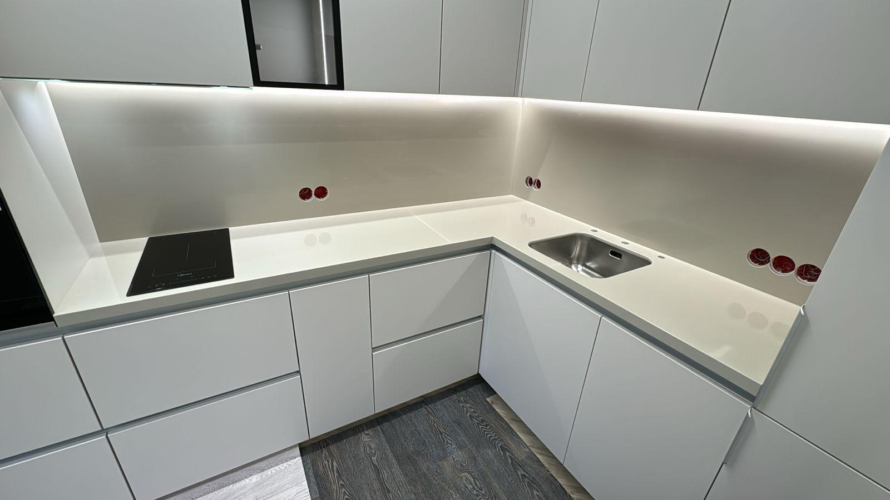

Атлант · ТюменьИзделия из камня.
Изделия из камня.
Под ваши размеры.
Столешницы, подоконники, лестницы и другие изделия из искусственного камня в Тюмени. Замер, изготовление и установка.
Рассчитать изделие
ПРИМЕРЫ РЕШЕНИЙДля кухни.
Для кухни.
И других пространств.
Рассмотрите готовые изделия, форму и сочетание с интерьером. Обсудим назначение, размеры и материал, затем подготовим расчёт вашего изделия.
Рассчитать изделие